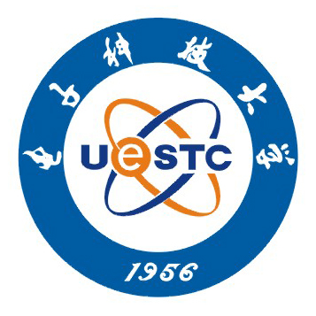

|
Brief Bio
Jian Gao is currently a Ph.D. Student in CompleX Lab, Web Sciences Center, University of Electronic Science and Technology of China (UESTC). Prior to that, he was a Master Student in School of Computer Science and Engineering, UESTC. In 2012, he received his B.Sc Degree in Information and Computing Science from School of Mathematical Sciences, UESTC.
His research interests focus on understanding phenomena in social and economic systems through empirical and theoretical analysis. He is working with Prof. Tao Zhou in solving a variety of problems, including information spreading in spatial social networks, local economic structure analysis, reputation evaluation in online ecosystems, etc. His works have been published in some peer-reviewed scientific journals, such as Scientific Reports, Europhysics Letters, Physica A and Chinese Physics Letters.
[READ MORE]
Visiting
I am looking for a research group to be a Visiting Ph.D. Student or Visiting Scholar for two years. The visiting is a Non-Degree Program, which is financially supported by China Scholarship Council (CSC). [READ MORE]
Research Interests
Network Science: Network Models, Percolation, Networked Spreading Processes
Data Analysis: Social Media, Co-authorship, Economy and Industry Data Analysis
Recommendation: Recommender Systems, Ranking Methods, Vertex Similarity
Selected Projects
Modeling Local Industry Structure and Economic Complexity of China [Link]
Information Spreading and Percolation on Spatial Social Networks [Link]
User Reputation Evaluation and Robust Online Ranking Methods [Link]
[READ MORE]
Selected Publications
Jian Gao, T Zhou, et al. Symbiosis and monopoly of the local industry structure in China. Oct 2015. (In preparation for Science Advances) [Link]
Jian Gao & T Zhou. Evaluating user reputation in online rating systems via an iterative group-based ranking method. Sep 2015. (under review at Knowledge-Based Systems) [Link]
Jian Gao, T Zhou & Y Hu. Bootstrap percolation on spatial networks. Scientific Reports, 5:14662, 2015. [Link]
Jian Gao, Y-W Dong, M-S Shang, S-M Cai & T Zhou. Group-based ranking method for online rating systems with spamming attacks. Europhysics Letters, 110(2): 28003, 2015. [Link]
J Yuan, Q-M Zhang, Jian Gao, L Zhang, X-S Wan, X-J Yu & T Zhou. Promotion and resignation in employee networks. Physica A, 2015. (In press) [Link]
[READ MORE]
Selected Awards
Contact

E-mail: gaojian08 [at] hotmail [dot] com
Mobile: (+86) 136-9944-5766
Voice: (617) 500-3208 Skype: gaojianuestc
Address: Room B1-202, Main Building, UESTC
Xiyuan Ave No.2006, West Hi-Tech Zone
Chengdu 611731, Sichuan Province, P.R. China
What's new
[2015/10] We are preparing a paper on Ego Communication Networks. We confirmed that ECNs have a critical size of 150, above which it's structure will change dramatically [READ MORE].
[2015/10] Our submission has been accepted for publication by Physica A. It takes more than two years for the reviewers to accept it. The latest version can be found here.
[2015/10] We have submitted our manuscript on similarity index for personalized recommender. The arXiv version can be found here Novel Similarity Index.
[2015/10] My Curriculum Vitae has been updated. Find it here Curriculum Vitae.
[2015/10] Our pre-print on employee networks has been reviewed by John Keil. “…suggests that techniques borrowed from the emerging field of network science offer clues about whether promotion or resignation is more likely for a given individual”. [READ MORE].
[2015/10] Our paper has been published online: Bootstrap percolation on spatial networks.
[2015/10] I will attend 2015 Research Forum on Complex Systems, hosted by Southwest University of Science and Technology, Mianyang, China. October 26~27, 2015.
[2015/09] Our submission has been accepted by Scientific Reports. In this paper, we study bootstrap percolation on spatial networks. The latest version can be found here.
[2015/09] Our manuscript on user reputation evaluation have been submitted. The method is inspired by the original group-based method and the iterative refinement procedure. The arXiv version can be found here.
[2015/09] The new semester begins, and now I'm a second-year PhD student. How time flies!! I have to run faster.
[2015/08] I have finished a three-month internship at Brand Big Data, Co., where I served as a data analyst and research group leader.
[2015/08] We are preparing an manuscript on the local economic complexity and the industry space of a nation.
[2015/08] I have travelled to Europe with my classmates. I love those small villages with the blue sky ad white clouds.
[2015/07] We have received the referees’ comments, accordingly, we have revised the manuscript and resubmitted the revised version.
[2015/07] I have attended the 3rd National Conference on Statistical Physics and Complex Systems in Lanzhou University and have a visit to Qinghai Lake in Xining.
[2015/07] We have completed a preliminary technical report on Cell Economics, based on the analysis of company data.
[2015/06] I have attended the Conference on Economic Complexity and made a presentation. The conference is hosted by China Inter-discipline Association for Complex Economy（CIACE）in Yantai, Shandong province.
[2015/06] Our paper on human resource management is published in a new magazine (in Chinese). Online available: Big Data Research, 2015, 1(1): 2015012.
[2015/06] We start a new project on Company Computing. We focus on the company lifespan, the urban economy and some other fascinating issues.
[2015/06] Two manuscripts are in progress. One is about recommendation algorithm and the other is about user reputation evaluation.
[2015/06] I have got the chance to take a free trip to Europe this summer. Thanks to the ISS club.
[READ MORE]
|